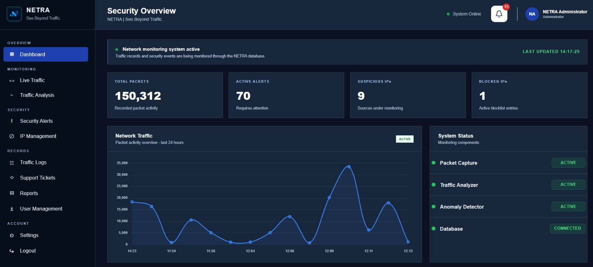
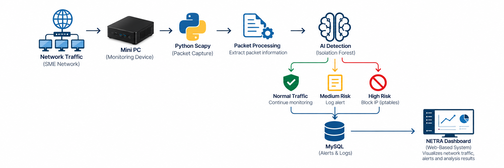

01
DASHBOARD
Monitor your network from one place.
Provides an overview of network traffic, security alerts, suspicious IPs, blocked IPs and system status.
NETWORK TRAFFIC ANALYSIS & MONITORING SYSTEM
NETRA is a web-based platform designed to monitor, analyse and visualize network traffic in real-time. It helps identify abnormal traffic behaviour and provides administrators with better visibility into network activity.
THE PRODUCT
NETRA combines real-time packet capture, network traffic analysis, AI-based anomaly detection and security alert monitoring through one centralized web-based platform.
NETRA captures network packets using Python Scapy, allowing administrators to observe network activity in real-time.
LIVE TRAFFICCaptured packet information is processed and prepared for traffic behaviour analysis.
PACKET PROCESSINGIsolation Forest analyses network traffic behaviour to help identify patterns that differ from normal network activity.
ISOLATION FORESTSuspicious network activity detected by NETRA is displayed as a security alert for administrator review.
ALERT MONITORINGAdministrators can view monitored IP addresses and network access information through the NETRA dashboard.
IP MANAGEMENTNETRA presents network and security information in a structured format to support monitoring and analysis.
REPORTINGSNEAK PEEK
Explore the main NETRA interfaces used to monitor traffic, review detected suspicious activity and manage monitored IP addresses.
HOW IT WORKS
NETRA captures network packets, processes traffic information and analyses traffic behaviour to identify abnormal patterns.

Receive traffic from the configured network monitoring interface.
Process traffic attributes and classify network behaviour.
Identify abnormal records and generate security alerts.
Review events, manage incident tickets and create reports.
Live detection requires connection to the configured packet-capture and detection components.
TECHNOLOGY
NETRA combines packet capture, machine learning, database storage and web technologies to support network monitoring.
Operating System
Provides the Linux environment used to run NETRA's monitoring components.
Programming Language
Used to develop NETRA's packet monitoring, processing and detection functions.
Real-Time Packet Capture
Captures live network packets for real-time traffic monitoring and analysis.
Isolation Forest
Provides the Isolation Forest model used to identify abnormal network traffic patterns.
Local Server Environment
Provides the local server environment for NETRA’s dashboard and database.
Alerts & Logs Database
Stores network information, security alerts and monitoring records.
Firewall Technology
Supports IP blocking and unblocking when managed by the administrator.
Development Tool
Used to develop and manage NETRA's source code during the project.
SEE BEYOND TRAFFIC.
NETRA demonstrates a practical approach to real-time network monitoring by combining packet capture and AI-based anomaly detection. The system provides administrators with better visibility of network activity and helps identify suspicious traffic.
THE TEAM
NETRA was developed as a Final Year Project at German-Malaysian Institute.
PROJECT SUPERVISOR
TEAM LEADER
TEAM MEMBER
TEAM MEMBER
TEAM MEMBER
CONTACT
+60 11-2833 1082
arifhaziq.abdjabar@student.gmi.edu.my
+60 11-1499 7031
mdammar.mdrasid@student.gmi.edu.my
+60 13-5541 7667
mdazim.aman@student.gmi.edu.my
+60 11-456 3021
nurdamia.suhaimi@student.gmi.edu.my
FINAL YEAR PROJECT